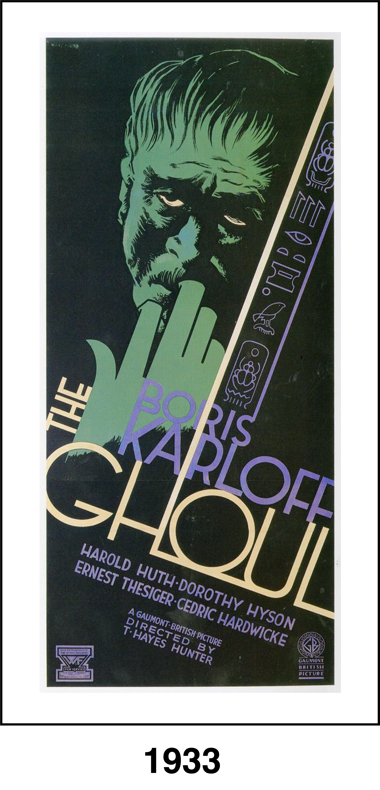
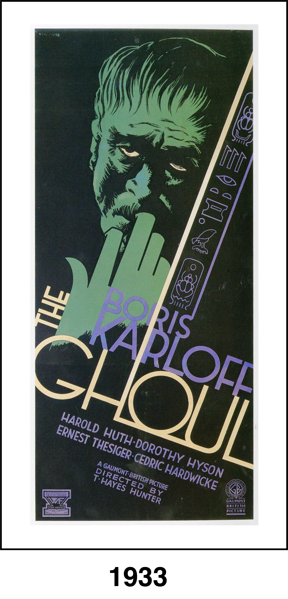

Egyptologist and professor Henry Morlant (Boris Karloff) thinks an ancient jewel will give him powers of rejuvenation if it is offered up to the god Anubis. But when Morlant dies, his assistant Laing (Ernest Thesiger) steals the jewel. While a gaggle of interlopers, including a disreputable lawyer (Cedric Hardwicke) and a fake vicar (Ralph Richardson), descend on the professor's manor to steal the jewel for themselves, Morlant returns from the dead to punish everyone who has betrayed him.